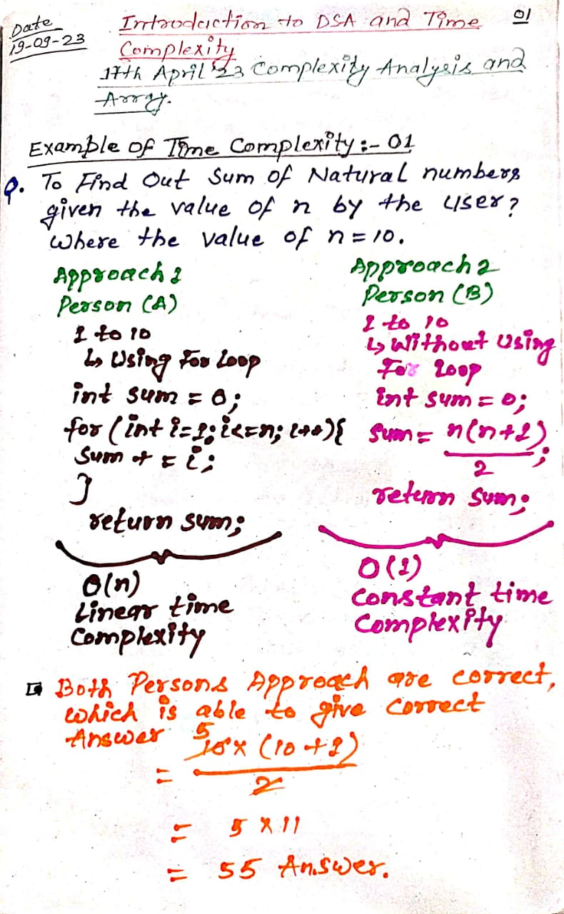
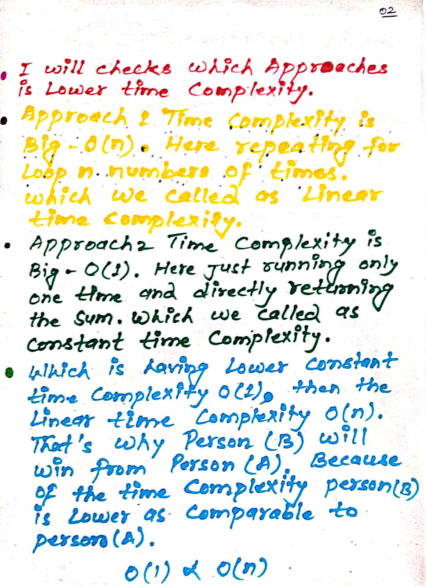
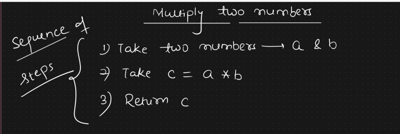

Ques1: What is Data Structures?
Ans: Data Structures: once we have data in variables, we need some mechanism for manipulating that data to solve problems. Data structure is a particular way of storing and organizing data in a computer so that it can be used efficiently. A data structure is a special format for organizing and storing data. General data structure types include arrays, files, linked lists, stacks, queues, trees, graphs and so on..
# To store the data in a structured manner / (propered way). It is also called as Data Structures.
Example of Data Structures:
 Ques2: How many types of the Data Structures classified into ways?
Ans: Depending on the organization of the elements, Data structures are classified into two types:
Ques3: How many different kinds of Data Structures we have in the list?
Ans: There are so many kinds of Data Structures having:
Ques4: What is an Algorithm?
Ans: An algorithm is the step-by-step unambiguous (unambigous means confusion / deterministic) instructions to solve a given problem.
# There are two main criteria for judging the merits of algorithms: correctness (does the algorithm give solution to the problem in a finite number of steps) and efficiency (how much resources in terms of memory and time does it take to execute).
# Algorithm is simpliy a sequence of finite steps that we need to execute to generate one final outcome that to in finite amount of time.
Example of Algorithm:
Ques5: What are the properties of Algorithms?
Ans: There are various properties of algorithms:
For simple example:
While (True);
print ('I am Abdullah')
This is not a valid algorithm. because this particular code will execute infinite number of times. because every condition will be true and that is something which is point to be noted.
Ques6: What are the different types of algorithms?
Ans: There are two types of Algorithms, we have:
Ques7: Why is complexity Analysis required?
Ans: Sometimes, there are more than one way to solve a problem, So, we need to learn how to compare the performance of different algorithms and choose the best one to solve a particular problem. While analayzing an algorithm, we mostly consider time complexity and space complexity. To know how efficent an algorithm or a program is, we neeed to do complexity analysis.
Ques8: Given two algorithms for a task, how do we find out which one is better?
Ans: One way of doing this is - implement both the algorithms and run the two programs on your computer for differnet inputs and see which one takes less time.
There are many problems with this approach for analysis of algorithms.
Ques9: Why is the need for time complexity?
Ans: When analyzing any algorithm, we need to evaluate the effectiveness of that algorithm, accordingly, we need to prefer the most optimized algorithm so as to save the time taken by it to excute. An Example for the same could be linear search and binary search. Let's suppose we need to search a given value in a sorted array of size 8. this would take 8 iterations for linear search whereas it would just take log(8) - 3 iterations for binary search and linear search will be discussed in further lectures.
Ques10: What is Time Complexity (Analysis)?
Ans: Introduction of Time Complexity: Time complexity of an algorithm represents the amount of Time required by the algorithm to run to completion. Time requirements can be defined as a numerical function T(n), where T(n) can be measured as the number of steps, provided each step consumes constant time.
# Applying the asymptotic analysis to measure the time requirement of an algorithm as a function of input sizes is known as time complexity. We assume each instruction takes a constant amount of time for time complexity analysis.
# Total time complexity of a program is equal to the summation of all the running time of disconnected fragements.
# Algorithm analysis is an important part of computational complexity theory, which provides theoretical estimation for the required resources of an algorithm to solve a specific computational problem. Analysis of algorithms is the determination of the amount of time and space resources required to execute it.
Example of Time Complexity: addition of two n-bit integers takes n steps. Consequently, the total computational time is T(n) = c * n, where c is the time taken for the addition of two bits. Here, we observe that T(n) grows linearly as the input size increases
# An important question while programming is: How efficient is an algorithm or piece of code?
# Efficiency covers lots of resources, including:
# All are important but we are mostly concerned about CPU time. Be careful to differentiate between:
Ques11: How many different types of Time Complexity (Analysis)?
Ans: To analyze a given algorithm, we need to know, with which inputs the algorithm takes less time (i.e. the algorithm performs well) and with which inputs the algorithm takes a long time.
# Three types of Time Complexity (Analysis) are generally performed: